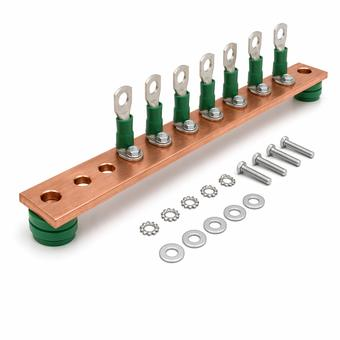

Ground vs. Neutral: Why They Bond Once and Never Again
They are tied together at the service, which is why they get confused, and they must not be tied anywhere else. The neutral carries load current every second the system runs. The equipment grounding conductor carries current only when something has already gone wrong.

Key takeaways
- The neutral is a circuit conductor that carries load current continuously. The equipment grounding conductor carries current only during a fault.
- They are bonded at exactly one point: the main bonding jumper at the service disconnect, or at each separately derived system.
- A second bond puts normal neutral current onto equipment enclosures and onto every parallel metallic path in the building.
- The ground rod does not clear faults. The equipment grounding conductor does. Earth is far too poor a conductor to open a breaker.
On this page · 7 sections
Two conductors, two jobs
The neutral — the code calls it the grounded conductor — is part of the circuit. On a single-phase branch circuit it returns every amp the load draws. It is insulated, it is sized for load, and it is expected to have current on it whenever anything is switched on.
The equipment grounding conductor, or EGC, is not part of the circuit. In normal operation it carries nothing. Its one job is to give fault current a deliberate low-impedance path back to the source so that enough current flows to open the overcurrent device quickly, and to hold every metal enclosure it touches at the same potential while that happens.
They are sized by different rules for that reason. The neutral is sized from load, under NEC 220.61. The EGC is sized from the rating of the overcurrent device ahead of it, under NEC 250.122, because what it has to survive is the fault, not the load.
The single bonding point
At the service disconnect the two are deliberately connected, by the main bonding jumper, under NEC 250.24 and 250.28. That connection is what makes a line-to-enclosure fault into a line-to-neutral fault electrically, which is what makes the fault current large enough for a breaker to see.
It happens once. A separately derived system — most commonly a transformer secondary, also a generator with a switched neutral — gets its own bond at the transformer or at the first disconnect, under NEC 250.30, because it is a new source with its own neutral. One source, one bonding point.
What a second bond actually does
Bond neutral to ground a second time — typically by leaving the bonding screw in a subpanel — and the neutral now has two paths back to the source: its own conductor, and the EGC. Current divides between them by impedance, so a share of normal load current flows on the EGC from that moment on.
That has four consequences, and none of them announce themselves:
- Enclosures carry current. Conduit, panel cans, equipment frames and any bonded metal in the path become current-carrying parts under normal conditions.
- Ground-fault protection stops working properly. A GFCI or a GFP scheme measures the difference between outgoing and returning current. Neutral current on the EGC is exactly the imbalance it is built to trip on, so it either trips for no reason or has its margin quietly eaten.
- The fault path is no longer predictable. The thing the EGC exists for — a known low impedance back to the source — now shares its path with load current.
- It is hard to find. Everything works. Lights come on, loads run, and nothing fails until someone measures current on a ground conductor or a GFCI starts tripping on a circuit with nothing wrong with it.
NEC 250.6 names this directly as objectionable current over grounding conductors, and requires the arrangement to be altered to stop it.
Subpanels
A subpanel is where this goes wrong most often, because a panelboard ships ready to be a service panel. It arrives with a bonding screw or strap that ties the neutral bar to the can, which is correct in exactly one place and wrong everywhere else.
Fed as a subpanel, the panel needs four wires — two or three ungrounded conductors, a neutral and an EGC — the neutral bar isolated from the enclosure, a separate ground bar bonded to the enclosure, and that bonding screw removed. Neutrals land on the isolated bar, grounds land on the bonded bar, and the two never touch again downstream of the service.
The ground rod does not clear faults
This is the most persistent misunderstanding in the subject, and it is worth being blunt about. A driven ground rod might present 25 ohms to earth on a good day. At 120 V that is under 5 amps — nowhere near enough to open a 20 A breaker, and quite enough to kill someone. Earth is not a fault-clearing path.
The grounding electrode system exists for different reasons: to reference the system to earth so its voltage to ground is defined, to give lightning and switching surges somewhere to go, and to limit the voltage imposed by a higher-voltage line contacting a lower-voltage one. Clearing faults is the EGC's job, through metal, back to the source, every time.
Common mistakes
- Leaving the bonding screw in a subpanel. The default state of a new panelboard, and wrong anywhere but the service.
- Using the EGC as a neutral. Running a three-wire feeder to a subpanel and landing neutrals on the ground bar is the same fault with extra steps.
- Assuming a ground rod protects anything. It does not clear faults and never did.
- Sizing the EGC from load. It is sized from the overcurrent device, under NEC 250.122, because the fault is what it has to carry.
- Treating a generator as always separately derived. It depends on whether the neutral is switched. A generator with a solid neutral is not an SDS, and bonding it as one creates the second bond.
Frequently asked questions
What is the difference between ground and neutral?
The neutral is a circuit conductor that carries load current back to the source whenever the load is on. The equipment grounding conductor carries no current in normal operation; it exists to give fault current a low-impedance path back to the source so the overcurrent device opens, and to keep metal enclosures at the same potential. They are sized by different rules because one carries load and the other carries faults.
Can neutral and ground be connected in a subpanel?
No. They are bonded at exactly one point, the main bonding jumper at the service disconnect, or at each separately derived system such as a transformer secondary. Bonding them again in a subpanel puts normal load current onto the equipment grounding conductor and onto every bonded metal enclosure in that path, and interferes with ground-fault protection. NEC 250.6 calls this objectionable current and requires it to be corrected.
Why is the neutral bonded to ground at all?
Because that bond is what turns a line-to-enclosure fault into a line-to-neutral fault electrically. Without it, a fault to a metal enclosure would not draw enough current to open the breaker, and the enclosure would simply sit energized. The single bond is what makes overcurrent protection work for ground faults.
Does a ground rod clear a fault?
No. A driven rod may present around 25 ohms to earth, which at 120 V passes only a few amps — far too little to open a 20 A breaker and more than enough to be lethal. Faults are cleared by the equipment grounding conductor back through metal to the source. The electrode system exists to reference the system to earth and to handle surges.
Next steps
The grounding and bonding reference covers the hardware, and ground-fault protection covers what the EGC makes possible.
Run the numbers
- Ground Rod Resistance CalculatorResistance to earth from soil resistivity and rod length.
- Available Fault Current CalculatorThe current the EGC has to carry at a transformer secondary.
Read next
- NEC 250.122 EGC Sizing ExplainedHow the conductor that clears the fault is actually sized.
- Grounding & Bonding Basics
- Ground-Fault Protection & NEC 230.95
- Arc-Flash Boundary Basics
- Delta vs. Wye Connections
Cite or link to this guide
Free to quote with attribution. Suggested citation: Voltfield Editorial Team, “Ground vs. Neutral: Why They Bond Once and Never Again” Voltfield, updated September 29, 2026. https://voltfield.org/guide-grid-forming-vs-grid-following.html
Get new guides by email
One short email when a new guide or calculator is published, at most once a month. Your address is used for nothing else.